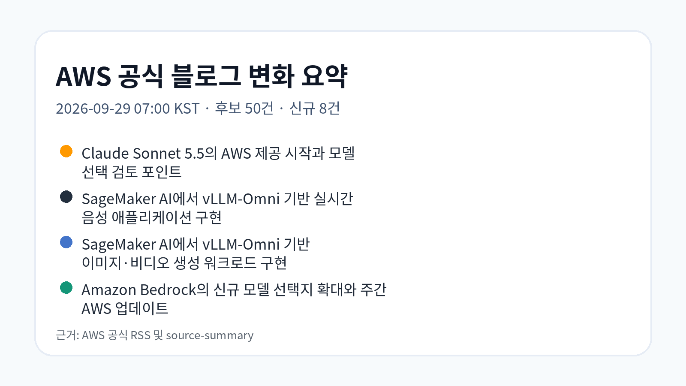
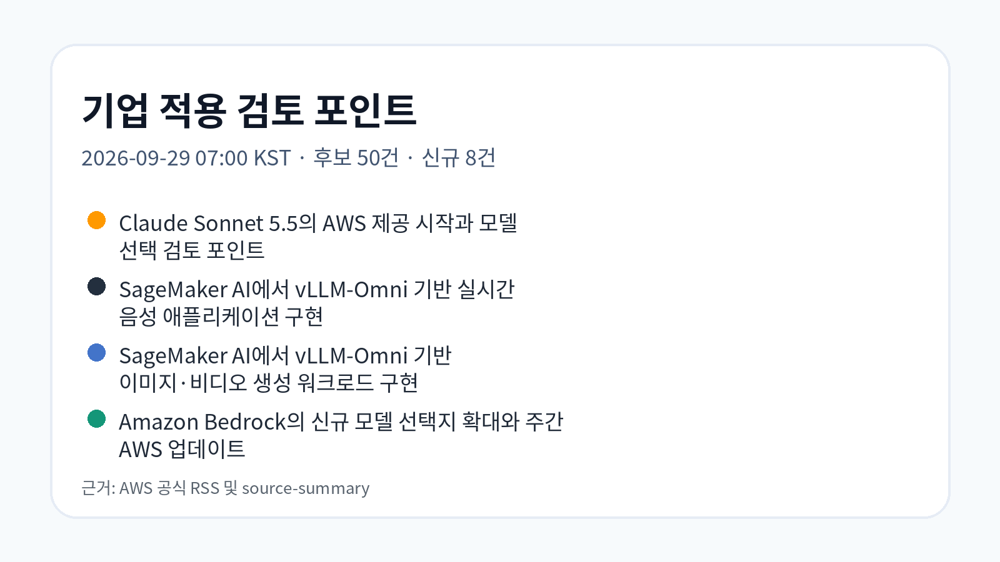
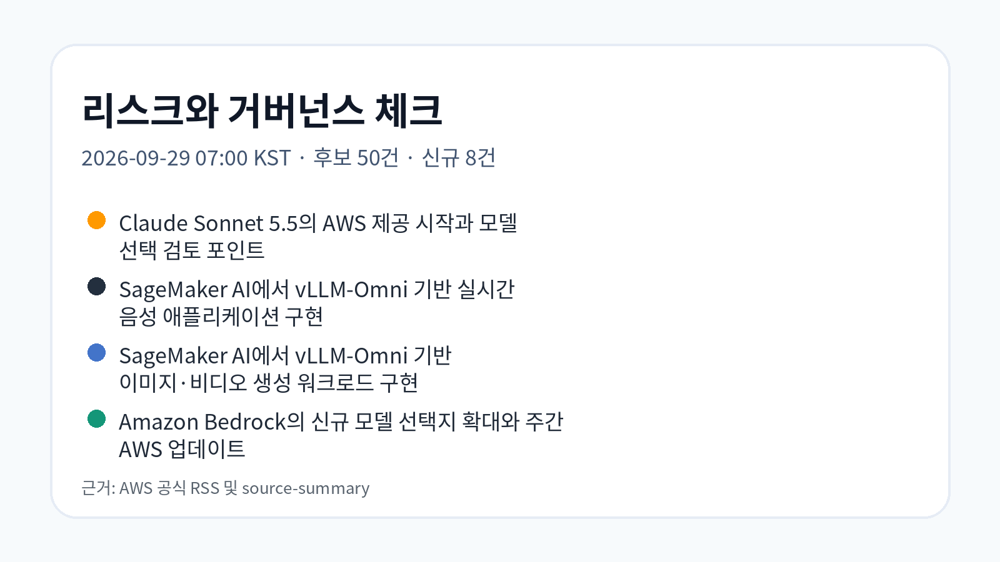

Claude Sonnet 5.5의 AWS 제공 시작과 모델 선택 검토 포인트
Amazon Bedrock과 Claude Platform on AWS에서 Claude Sonnet 5.5 사용이 가능해졌다는 공지입니다. 기업은 코딩·지식 업무에서 모델 성능, 작업당 비용, 응답 속도를 함께 비교해야 합니다.
원문 보기공식 RSS 3개에서 후보 50건을 확인했고, 신규 저장 8건을 기준으로 기업 AI·Data·Cloud 의사결정 관점의 근거 중심 시사점을 정리했습니다.
신규 게시물이 확인되어 raw 저장, LLM Wiki 동기화, GBrain 파일 단위 import를 수행했습니다. 이번 수집에서는 모델 선택지 확대, SageMaker AI 기반 멀티모달 추론, Agent 검증, 문서 AI 수명주기, DR, 연합학습이 함께 관찰됐습니다.
Amazon Bedrock과 Claude Platform on AWS에서 Claude Sonnet 5.5 사용이 가능해졌다는 공지입니다. 기업은 코딩·지식 업무에서 모델 성능, 작업당 비용, 응답 속도를 함께 비교해야 합니다.
원문 보기AWS vLLM-Omni Deep Learning Container와 SageMaker AI를 사용해 Qwen3-TTS를 배포하고 양방향 연결로 음성을 스트리밍하는 구현 글입니다.
원문 보기하나의 AWS vLLM-Omni Deep Learning Container에서 FLUX.2-klein 이미지 생성과 Wan2.1-VACE 비디오 생성을 연결하는 예시입니다. 결과물은 비동기 추론과 Amazon S3 회수 흐름으로 설명됩니다.
원문 보기AWS News Blog의 주간 정리로 GPT-6 Sol, GPT-6 Luna, Claude Opus 5.5 on Amazon Bedrock 등 모델 선택지 확대를 다룹니다.
원문 보기Amazon Nova Act와 Amazon Bedrock AgentCore를 활용해 사용자 여정 검증을 Agent 기반 합성 모니터링으로 구현하는 아키텍처와 샘플을 설명합니다.
원문 보기Amazon Textract Custom Queries 어댑터를 CloudFormation, Terraform, 교차 계정 승격, VPC endpoint, 암호화, 최소 권한 IAM로 운영하는 방식을 설명합니다.
원문 보기AWS Korea Tech Blog의 국내 사례로, 모든 시스템에 동일한 복구 수준을 적용하기보다 업무 중요도에 따라 클라우드 DR 구조를 설계하는 접근을 다룹니다.
원문 보기데이터를 한곳에 모으기 어려운 의료·금융·공공 환경에서 Amazon EKS와 NVIDIA FLARE로 연합학습을 구현하는 글입니다.
원문 보기


이번 실행에서 확인한 자료는 생성형 AI 모델 선택지, SageMaker AI 추론 컨테이너, Agent 기반 검증, 문서 AI 운영 자동화, DR·연합학습 같은 인프라 주제가 동시에 업데이트되고 있음을 보여줍니다. 단일 기술 유행으로 묶기보다 워크로드별 비용, 지연시간, 데이터 경계, 감사 가능성을 분리해 판단해야 합니다.
| 기사 | 게시 | 카테고리 |
|---|---|---|
| Claude Sonnet 5.5의 AWS 제공 시작과 모델 선택 검토 포인트 | 2026-09-29 | AI/ML |
| SageMaker AI에서 vLLM-Omni 기반 실시간 음성 애플리케이션 구현 | 2026-09-29 | AI/ML |
| SageMaker AI에서 vLLM-Omni 기반 이미지·비디오 생성 워크로드 구현 | 2026-09-29 | AI/ML |
| Amazon Bedrock의 신규 모델 선택지 확대와 주간 AWS 업데이트 | 2026-09-29 | AI/ML |
| Amazon Nova Act 기반 합성 모니터링 구현과 Agent 검증 패턴 | 2026-09-29 | AI/ML |
| Amazon Textract 어댑터 수명주기 자동화와 교차 계정 운영 | 2026-09-29 | Cloud |
| 웅진프리드라이프의 AWS Elastic Disaster Recovery 기반 클라우드 DR 환경 구축 | 2026-09-28 | Korea Tech |
| Amazon EKS와 NVIDIA FLARE로 구현하는 연합학습 (Federated Learning) | 2026-09-28 | Korea Tech |
공식 블로그의 사례와 기능 발표는 적용 가능성을 보여주지만, 실제 기업 적용 전에는 IAM 권한, 데이터 경계, 비용 구조, 서비스 리전, 기존 시스템 연계, 감사 추적 가능성을 별도 검증해야 합니다.
관찰된 사실: Amazon Bedrock과 Claude Platform on AWS에서 Claude Sonnet 5.5 사용이 가능해졌다는 공지입니다. 기업은 코딩·지식 업무에서 모델 성능, 작업당 비용, 응답 속도를 함께 비교해야 합니다.
근거 출처 URL: https://aws.amazon.com/blogs/machine-learning/introducing-claude-sonnet-5-5-on-aws/
기업 의사결정 시사점/리스크/기회: 관찰된 사실은 AWS가 Bedrock 기반 모델 선택지를 계속 확장하고 있다는 점입니다. 의사결정자는 특정 모델명보다 업무 단계별 비용·지연시간·보안 경계를 검증해야 합니다.
관찰된 사실: AWS vLLM-Omni Deep Learning Container와 SageMaker AI를 사용해 Qwen3-TTS를 배포하고 양방향 연결로 음성을 스트리밍하는 구현 글입니다.
기업 의사결정 시사점/리스크/기회: 관찰된 사실은 실시간 음성 생성이 관리형 추론 환경과 스트리밍 애플리케이션 구조로 구체화되고 있다는 점입니다. 기업은 지연시간, 음성 데이터 처리 권한, 사용자 동의와 저장 정책을 검토해야 합니다.
관찰된 사실: 하나의 AWS vLLM-Omni Deep Learning Container에서 FLUX.2-klein 이미지 생성과 Wan2.1-VACE 비디오 생성을 연결하는 예시입니다. 결과물은 비동기 추론과 Amazon S3 회수 흐름으로 설명됩니다.
기업 의사결정 시사점/리스크/기회: 관찰된 사실은 생성형 미디어 워크로드가 실시간·비동기 추론, 모델 컨테이너, 객체 저장소 조합으로 분리되고 있다는 점입니다. 기업은 생성물 저장 위치, 저작권 검토, GPU 비용 한도를 사전에 정해야 합니다.
관찰된 사실: AWS News Blog의 주간 정리로 GPT-6 Sol, GPT-6 Luna, Claude Opus 5.5 on Amazon Bedrock 등 모델 선택지 확대를 다룹니다.
기업 의사결정 시사점/리스크/기회: 관찰된 사실은 Bedrock에서 모델 선택지가 빠르게 늘고 있다는 점입니다. 의사결정자는 모델 카탈로그 확대를 도입 신호로만 보지 말고, 워크로드별 품질·비용·지연시간·규정 준수 기준을 표준화해야 합니다.
관찰된 사실: Amazon Nova Act와 Amazon Bedrock AgentCore를 활용해 사용자 여정 검증을 Agent 기반 합성 모니터링으로 구현하는 아키텍처와 샘플을 설명합니다.
기업 의사결정 시사점/리스크/기회: 관찰된 사실은 UI 스크립트 중심 모니터링을 Agent 기반 여정 검증으로 보완하려는 패턴이 제시됐다는 점입니다. 기업은 자동 검증 결과의 재현성, 실패 판정 기준, 권한 범위를 별도 통제해야 합니다.
원문과 추출 Markdown은 Obsidian raw, LLM Wiki collection, GBrain source 파일에 보존했습니다. 화면 표시 텍스트는 한국어 필드만 렌더링하도록 구성했습니다.